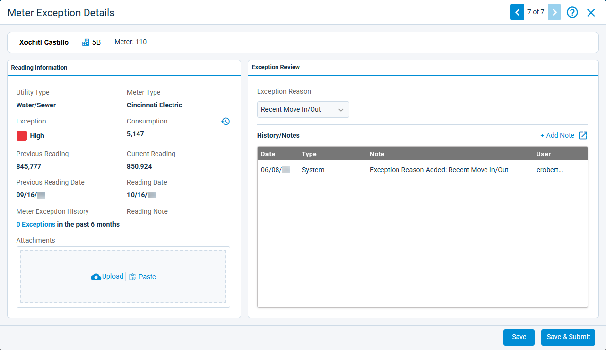
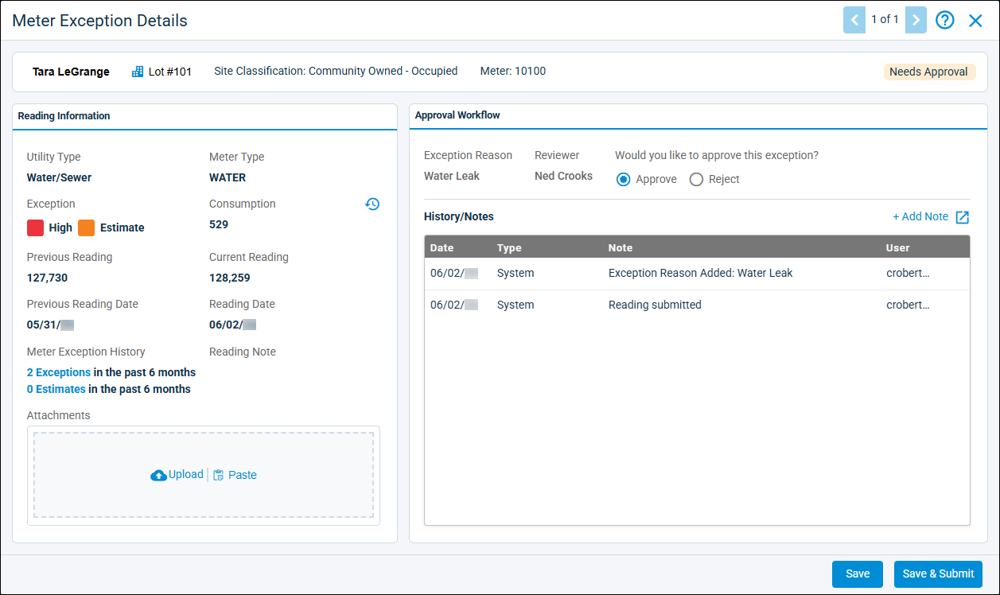
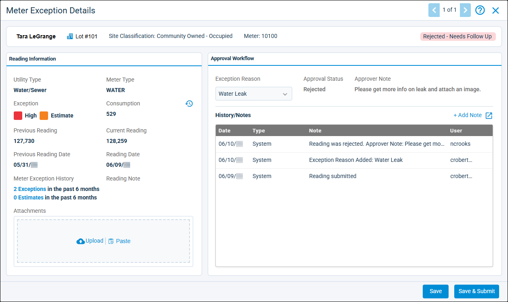

Source: https://rmxhelp.rentmanager.com/Topics/Express/KB/MU-Meter-Exceptions-Approval-Workflow.htm
Meter Exceptions Approval Workflow
To ensure that abnormal meter readings—known as exceptions—are thoroughly investigated before being posted, Rent Manager allows you to establish approval workflows. These workflows benefit your Metered Utilities process by producing cleaner data, stronger oversight, and greater confidence that utility billing is accurate with every posting. First, a reviewer examines the abnormal readings and marks each one with an Exception Reason to explain the unexpected consumption. An approver then analyzes the reviewer's work and either approves it for posting or sends it back to the reviewer for a follow-up. Once each exception is reviewed and approved, your meter readings can be posted.
More Information
To utilize an approval workflow, you must have already established, on the High/Low Settings pop-up, at least one consumption group, exception reason, and approval workflow. For more information, refer to Manage Metered Utilities High/Low Settings.
Related Privileges
| Group | Privilege | Column |
|---|---|---|
| Utilities | Metered utilities | Enabled |
For more information, refer to Control User Access.
Step 1: Review Exceptions
When meter readings are flagged as exceptions, reviewers in an approval workflow are responsible for providing reasons that account for or explain the exception. For example, a water meter might record unexpectedly high water consumption during a billing period. After investigating the issue, a reviewer selects the Exception Reason that best explains the excess consumption (for example, the high water consumption could be caused by a leaky sink, so the reviewer could choose a reason like Water Leak). Once all exceptions have reasons selected, the batch is submitted for approval in the next stage of the approval workflow.
To review reading exceptions, do the following:
-
Go to
 arrow_forward Services arrow_forward Metered Utilities arrow_forward Meter Readings.
arrow_forward Services arrow_forward Metered Utilities arrow_forward Meter Readings.
The Meter Readings page displays. -
Select the Property, Utility, and single Billing Period the exception is associated with.
-
Click Review Meter Exceptions.
The Meter Exceptions page displays. -
Select an exception from the list.

-
On the Exception Review tile, in the Exception Reason field, select a reason from the list that accounts for the exception.
-
If applicable, click
 Add Note to add a note that provides additional details about the exception.
Add Note to add a note that provides additional details about the exception. -
Click Save to save your changes to this exception without sending it for approval, or click Save & Submit to send it for approval.
-
Repeat steps 4–7 until all meter exceptions in the batch have an Exception Reason.
The updates to the Meter Exception Details are applied and ready to be approved or rejected.
Step 2: Approve Exceptions
After meter exceptions are given an Exception Reason by reviewers, approvers must determine if the reason given adequately accounts for each exception. If the reason given is sufficient, the exception is marked as approved. Alternatively, approvers can reject the reason given, sending the rejected exceptions back to the reviewers for further investigation. Once all meter exceptions in a batch are approved, the batch is considered ready to post.
More Information
Depending on the settings established in the High/Low Settings pop-up's Approval Workflows tab, .approval workflows have either a one-step or two-step approver process. For more information, refer to Manage Metered Utilities High/Low Settings.
One-Step Approval Process
In a one-step approval process, only a single approver is needed to approve or reject a reading's Exception Reason. To approve exceptions in a one-step approval process, do the following:
-
Go to
arrow_forward Services arrow_forward Metered Utilities arrow_forward Meter Readings.
The Meter Readings page displays. -
Select the Property, Utility, and single Billing Period the exception is associated with.
-
Click Review Meter Exceptions.
The Meter Exceptions page displays. -
In the banner at the top of the page, click View Exception Details.

-
On the Approval Workflow tile, in the Would you like to approve this exception? field, select either Approve or Reject.
-
If you selected Reject, in the optional Approver Note field, enter a comment to provide reviewers with the reasons for the rejection and/or with recommend steps to address any issues.
-
If applicable, click
Add Note to add a note that provides additional details about the approval or rejection of the exception. -
Click Save to save your changes to this exception without approving or rejecting it, or click Save & Submit to approve or reject it.
-
Repeat steps 4–8 until all meter exceptions in the batch have are approved or rejected.
The updates to the Meter Exception Details are approved, or are sent back for follow-up.
Two-Step Approval Process
In a two-step approval process, an Exception Reason must be approved by both a conditional approver and a final approver before readings can be posted. The process for both types of approvers is essentially the same as the one-step approver process outlined above, but with the following differences:
| Approver | Workflow |
|---|---|
|
Conditional Approver |
Initially, the conditional approver either approves or rejects the Exception Reason provided by the reviewer inStep 1: Review Exceptions. If they conditionally approve and submit all exceptions, the batch is sent forward to the final approver. If the conditional approver rejects at least one Exception Reason, the batch is sent back to the reviewer for a follow-up (see Step 3: Follow Up). If the final approver rejects at least one conditional approval, the batch is sent back to the conditional approver for investigation. The conditional approver then completes a follow-up (see Step 3: Follow Up)and sends the batch back to the reviewer an additional follow up. |
|
Final Approver |
The final approver either approves or rejects the conditional approval given by the conditional approver. If they give final approval and submit all exceptions, the batch is ready to post. If they reject at least one conditional approval, the batch is sent back to the conditional approver. |
Step 3: Follow Up
If an approver rejects at least one meter exception reason, reviewers are required to follow up on the exception. For example, if exceptions have been reported at the same unit for multiple months, an approver might want a thorough investigation to determine if there are more serious issues with the meter or unit. After follow-ups are submitted, approvers can approve or reject the follow-up.
More Information
If no meter exception reasons are rejected by an approver, proceed to Step 4: Post Meter Readings.
To follow up on a rejected exception, do the following:
-
Go to
arrow_forward Services arrow_forward Metered Utilities arrow_forward Meter Readings.
The Meter Readings page displays. -
Select the Property, Utility, and Billing Period the exception is associated with.
-
Click Review Meter Exceptions.
The Meter Exceptions page displays. -
Select a rejected exception from the list.

-
In the Approval Workflow tile, update the rejected exception using one or both of the following options:
Option Description Add Note or Attachment
In the History/Notes section, click
Add Note to open the Note Details pop-up. In the Note field, enter a description of the follow-up performed. Alternatively, in the File Attachments field, upload a file or image documenting the follow-up by clicking  Upload or paste an image from your clipboard by clicking
Upload or paste an image from your clipboard by clicking  Paste. After adding a note or attachment, click Save.
Paste. After adding a note or attachment, click Save.Change Exception Reason
In the Exception Reason drop-down, select a new reason from the list. You might choose this option if, upon further review, the original reason selected was not accurate.
More Information
In the two-step approval process, the option to change an Exception Reason is not available to conditional approvers who are doing a follow-up. Instead, conditional approvers must add a note or attachment in the Meter Exception Details pop-up. After doing so, the batch can be saved, submitted, and sent back to the reviewer.
-
Click Save to save your changes to this exception without submitting it for approval, or click Save & Submit to send the exception for approval.
The updates to the Meter Exception Details are applied.
Step 4: Post Meter Readings
After all meter exceptions in a batch are reviewed and their exception reasons approved, you can post the readings.
Related Privileges
| Group | Privilege | Column |
|---|---|---|
| Utilities | Post utility information | Enabled |
For more information, refer to Control User Access.
To post meter readings, do the following:
-
Go to
arrow_forward Services arrow_forward Metered Utilities arrow_forward Meter Readings.
The Meter Readings page displays. -
Select the Property, Utility, and Billing Period to post readings for.
-
Click Post Readings.
The Post Utilities pop-up displays. -
Enter or select the posting options that display. For more information, refer to Post Utilities.
-
Click Post Utilities.
The readings and associated charges are posted to tenant accounts.